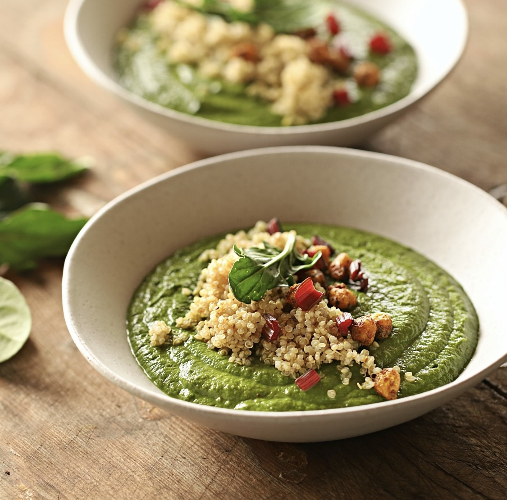
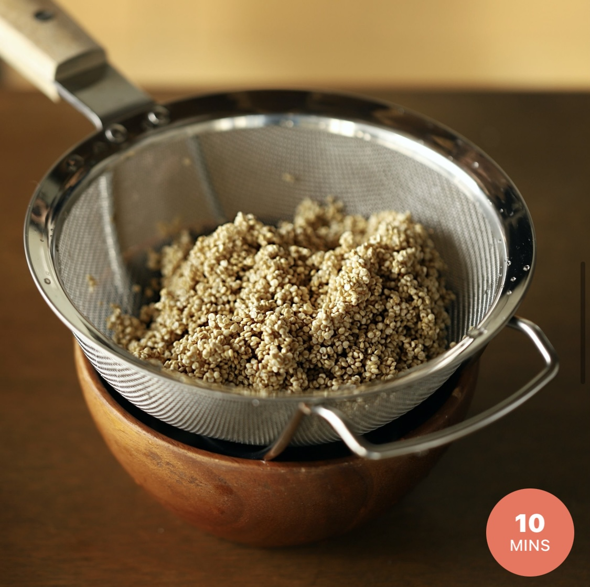
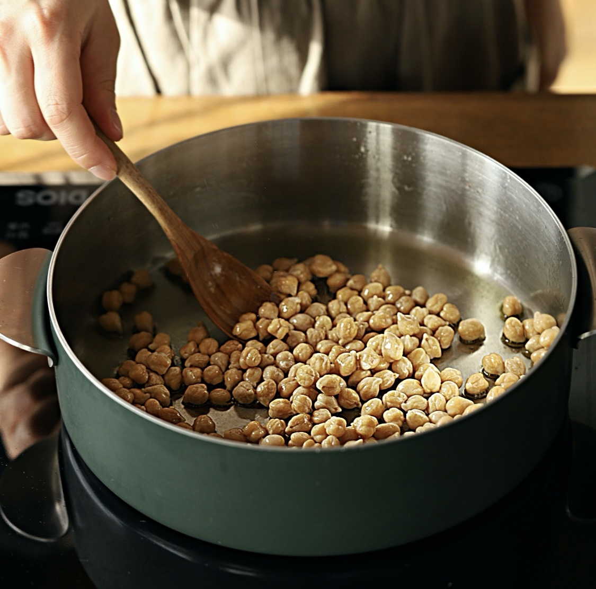
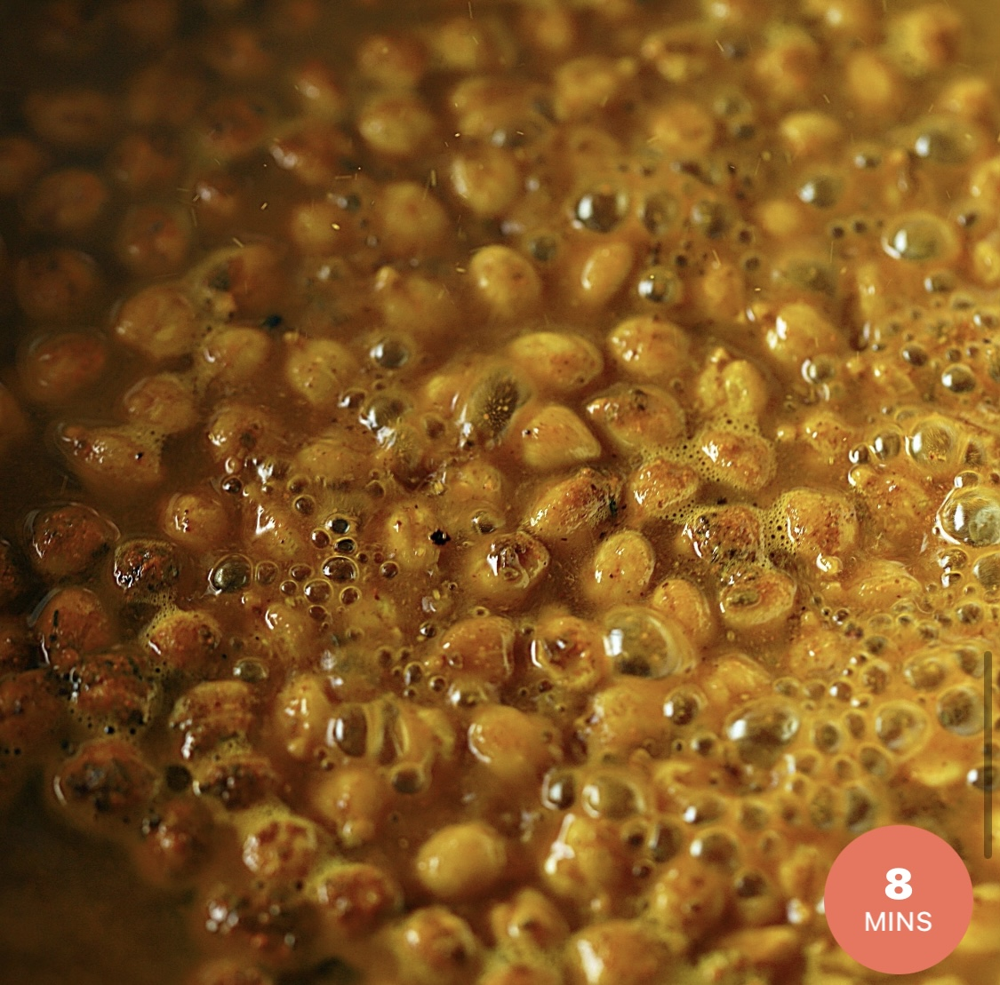
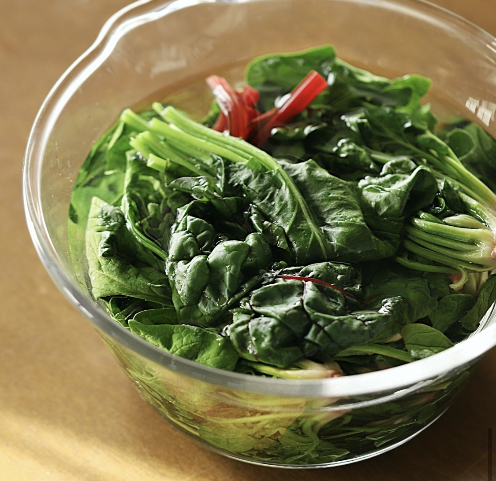
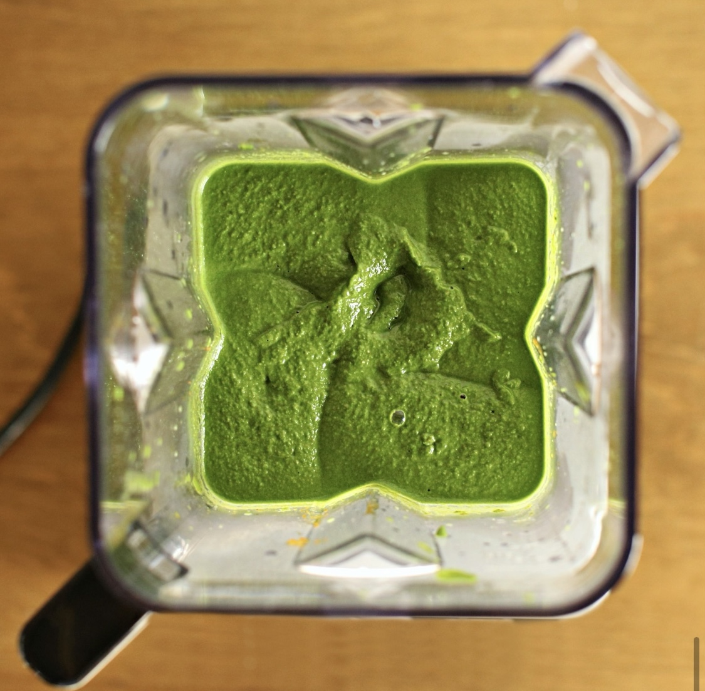

- 시금치 커리
- 난이도 ★ ★ ☆ ☆ ☆
- 재료
- 시금치 300g, 케일 50g, 적근대 50g, 올리브오일 약간, 불린병아리콩 200g, 채수3컵, 코코넛밀크 150ml, 소금반큰술, 퀴노아1컵, 소금 반큰술
- 향신료
- 큐민가루 1큰술, 강황가루 2큰술, 후춧가루 약간
- 1.
- 
- 물에 헹군 퀴노아를 냄비에 담고 생수 2컵을 부어 중불에서 10~15분간 끓여주세요.
- 2.
- 
- 냄비에 올리브유 1~2큰술을 두르고 불린 별아리콩과 향신료를 넣어 볶아주세요.
- 3.
- 
- 병아리콩에 채수 1컵을 붓고 뚜껑을 닫아 중약불에서 8~10분 정도 익혀주세요.
- 4.
- 
- 끓는 물에 소금 반큰술을 넣고 깨끗이 씻은 시금치와 케일을 20초 정도 데쳐주세요. 데친 잎채소는 찬물에 담근 후 물기를 짜고, 줄기는 잘게 송송 썰어주세요.
- 5.
- 
- 블렌더에 데친채소와 별아리콩, 채수 2컵을 넣어 곱게 갈아준 후, 냄비에 넣고 코코넛 밀크를 넣어 약불에서 한소끔 끓여 완성해 주세요.
- 6.
- 그릇에 커리를 담고 퀴노아아 볶아 둔 병아리콩, 근대줄기 등을 곁들여 맛있게 즐겨주세요.